Votre boutique.....
 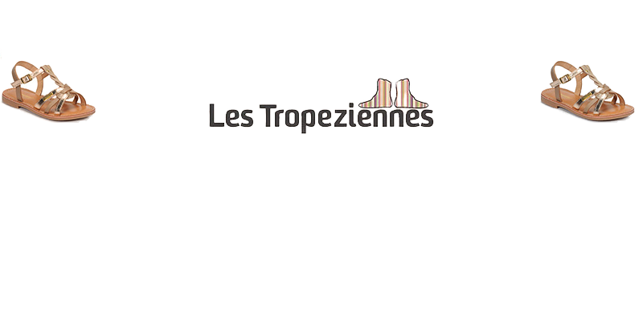
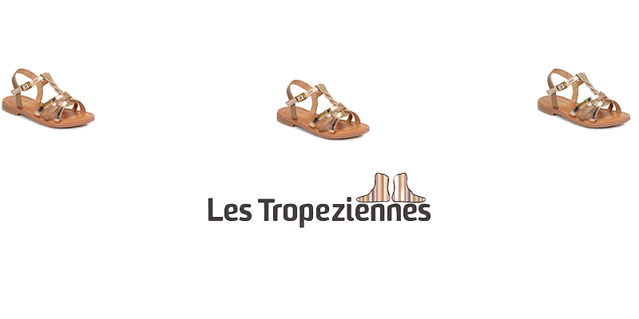
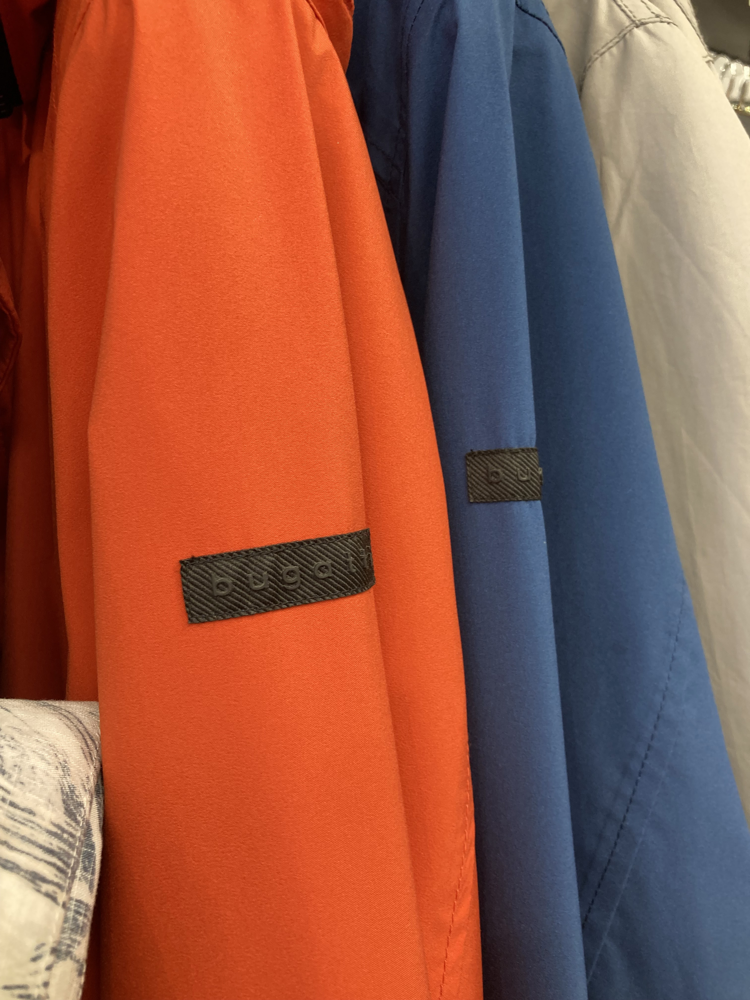
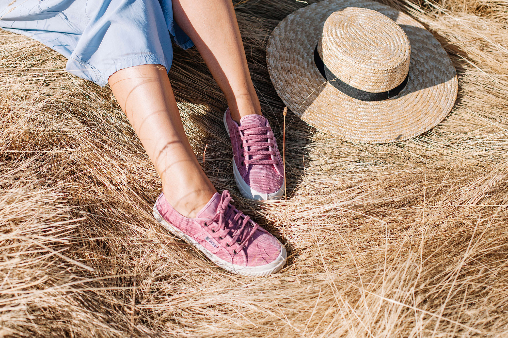
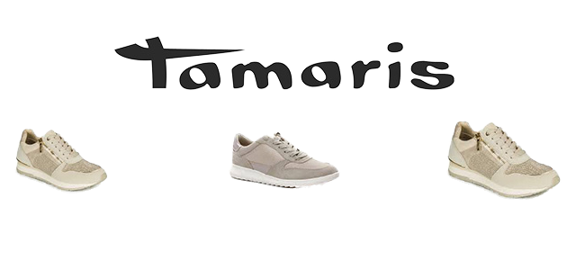
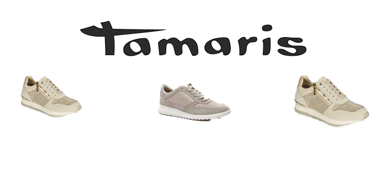
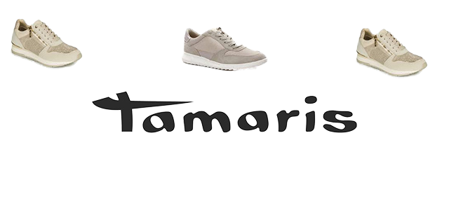
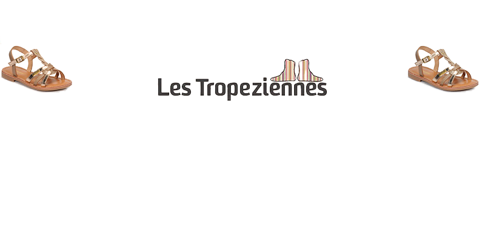
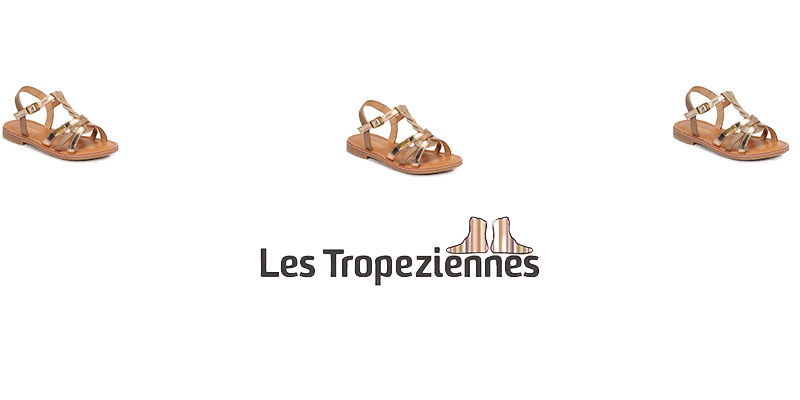
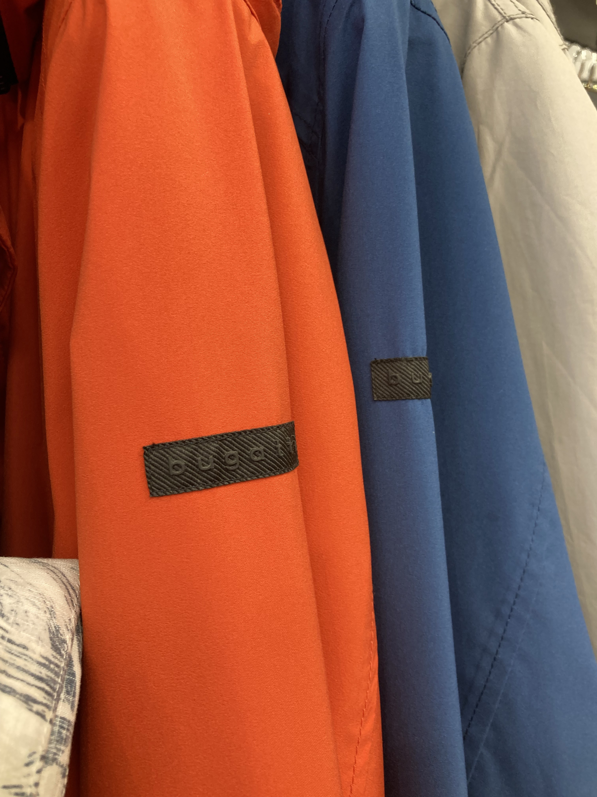
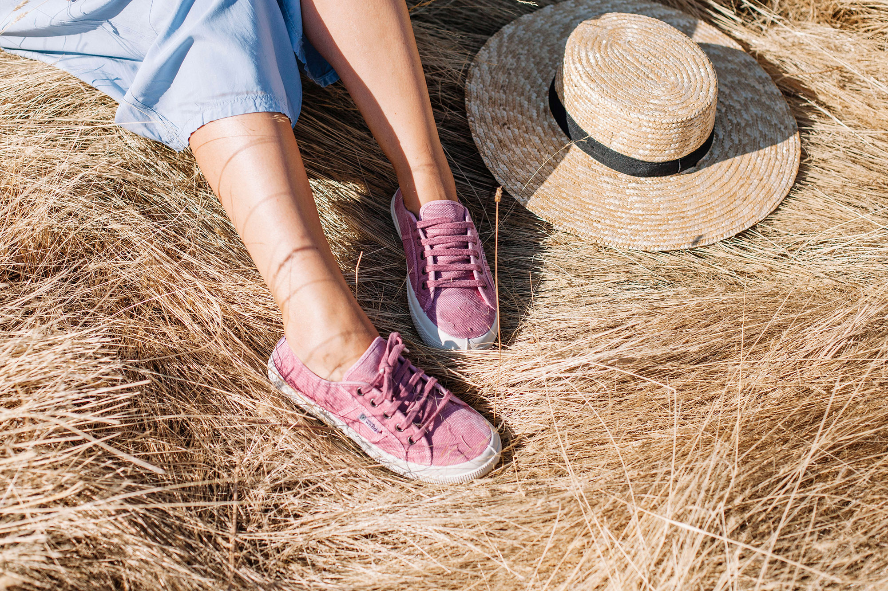
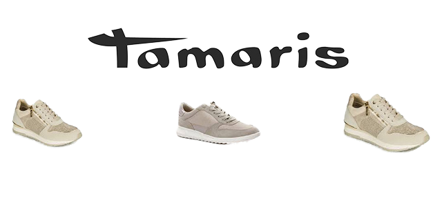
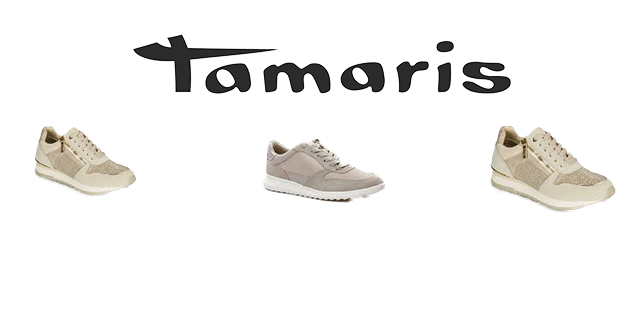
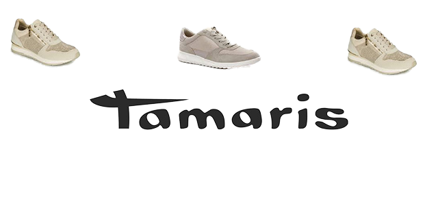

Des sandales aux baskets en passant par les espadrilles, la marque voyage avec aisance entre tradition et modernité. Quelles que soient vos envies pour cet été, vous trouverez la chaussure qu’il vous faut parmi une large collection les Tropéziennes par M Belarbi.
Les tropéziennes c'est aussi toute une gamme de prêt-à-porter, comme notre collection de polos, de tuniques et de maillots...
La marque n’oublie pas pour autant de se réinventer chaque saison au travers de deux collections complémentaires. Multifacettes, les pièces vont et viennent de l’été à l’hiver, des sandales aux boots, des bottes aux baskets. Un vestiaire coloré et intemporel mais toujours dans l’air du temps, imaginé par la Maison et qui accompagne ainsi chaque femme tout au long de l’année.


Bugatti est une marque internationale de chaussures créée en 1928 à Schwelm, en Allemagne par Johann Müller, grand-père du président d’AstorMueller, Tim Müller.
Bugatti est le choix incontournable de chaussures pour hommes élégants, Chics, raffinés et décontractés. Les chaussures Bugatti représentent un style de vie moderne et cosmopolite.
Depuis sa création en 1913, la marque Schott NYC n’a cessé de se développer. Innovation et renouvellement sont la grande force de la marque new-yorkaise à la renommée mondiale.Schott NYC est un incontournable des amateurs de beaux vêtements.. Schott est reconnu universellement comme un acteur incontournable et un influenceur majeur du monde de la mode et du monde artistique.
La marque BUGATTI allie authenticité et modernité depuis près d'un siècle. La collection bugatti est facile à porter, les produits sont de grande qualité et sont faits pour durer . les créations Bugatti sont influencées par l’élégance italienne, le raffinement français, la rigueur allemande et la décontraction scandinave pour un style sportswear chic.
Fabriquée en Espagne, les chaussures Natural World Eco sont 100% écologiques. La marque de chaussures Natural World c’est la combinaison d’une méthode talentueuse récupérée du passé et d’un engagement exemplaire de la part de ses fabricants pour la préservation de la planète.